I was evolving some Pokemon in Pokemon Go and wondered how much the Pokemon’s attributes change after evolution. The attributes of interest were combat power (CP) and hit points (HP). I focused my analysis from Pidgeys because I had the most data points for this species.
I collected data from a couple of days’ evolution, available for viewing here. Both times I was using a Lucky Egg.
x <- read.csv("../datasets/evolution2.csv")
x <- tbl_df(x)
pidgeys <- filter(x, pokemon == "Pidgey")
pidgeys## # A tibble: 55 × 7
## pokemon CP_pre HP_pre kg_pre CP_post HP_post kg_post
## <fctr> <int> <int> <dbl> <int> <int> <dbl>
## 1 Pidgey 270 NA NA 533 NA NA
## 2 Pidgey 267 NA NA 515 NA NA
## 3 Pidgey 259 NA NA 526 NA NA
## 4 Pidgey 212 NA NA 413 NA NA
## 5 Pidgey 209 43 2.20 403 66 36.70
## 6 Pidgey 203 41 1.18 395 64 19.75
## 7 Pidgey 201 43 1.70 392 66 28.38
## 8 Pidgey 198 41 2.26 396 65 37.72
## 9 Pidgey 191 NA NA 370 NA NA
## 10 Pidgey 163 42 1.08 322 63 18.07
## # ... with 45 more rowsQuestion 1: What is the relationship between CP before and CP after evolution?
To explore what happened to CP before and after evolution, I plotted these on a graph.
ggplot(pidgeys, aes(x = CP_pre, y = CP_post)) + geom_point(shape = 1) +
ggtitle("CP pre and post evolution")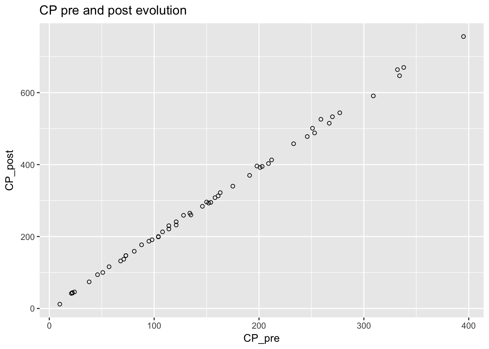
The relationship was roughly linear. I modeled the relationship using simple linear regression.
pidgey_CP_model <- lm(CP_post ~ CP_pre, data = pidgeys)
summary(pidgey_CP_model)##
## Call:
## lm(formula = CP_post ~ CP_pre, data = pidgeys)
##
## Residuals:
## Min 1Q Median 3Q Max
## -15.8820 -3.3266 -0.9626 3.2191 19.6111
##
## Coefficients:
## Estimate Std. Error t value Pr(>|t|)
## (Intercept) 0.780734 1.573649 0.496 0.622
## CP_pre 1.952155 0.008776 222.438 <2e-16 ***
## ---
## Signif. codes: 0 '***' 0.001 '**' 0.01 '*' 0.05 '.' 0.1 ' ' 1
##
## Residual standard error: 6.153 on 53 degrees of freedom
## Multiple R-squared: 0.9989, Adjusted R-squared: 0.9989
## F-statistic: 4.948e+04 on 1 and 53 DF, p-value: < 2.2e-16Based on the data, the estimated multipler was 1.95 with a standard deviation of 0.009. The model explained roughly 99.9% of the variation in CP after evolution. Here is the model in equation form.
\[ CP_{post} = 1.925 \times CP_{pre} + 0.781 + \epsilon\]
Question 2: How does evolution affect HP?
To view the relationship between pre and post HP, I plotted HP before and after evolution.
ggplot(pidgeys, aes(x = HP_pre, y = HP_post)) + geom_point(shape = 1) +
ggtitle("HP pre and post evolution")## Warning: Removed 5 rows containing missing values (geom_point).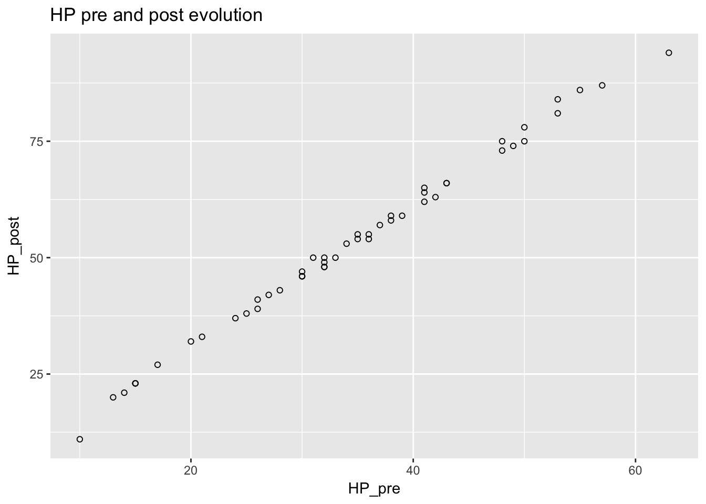
There was also a roughly linear relationship but it did not appear to be as tightly linear as the CP before and after.
pidgey_HP_model <- lm(HP_post ~ HP_pre, data = pidgeys)
summary(pidgey_HP_model)##
## Call:
## lm(formula = HP_post ~ HP_pre, data = pidgeys)
##
## Residuals:
## Min 1Q Median 3Q Max
## -4.2680 -0.6441 -0.0057 0.8595 2.5623
##
## Coefficients:
## Estimate Std. Error t value Pr(>|t|)
## (Intercept) -0.12035 0.51552 -0.233 0.816
## HP_pre 1.53883 0.01414 108.806 <2e-16 ***
## ---
## Signif. codes: 0 '***' 0.001 '**' 0.01 '*' 0.05 '.' 0.1 ' ' 1
##
## Residual standard error: 1.245 on 48 degrees of freedom
## (5 observations deleted due to missingness)
## Multiple R-squared: 0.996, Adjusted R-squared: 0.9959
## F-statistic: 1.184e+04 on 1 and 48 DF, p-value: < 2.2e-16From these observations it looks like the model is:
\[HP_{post} = 1.539 \times HP_{pre} -0.120 + \epsilon\]
This model explained >99% of the variance in HP after evolution.
Question 3: What is the relationship between CP and HP?
I plotted the relationship between CP and HP for Pidgeys.
ggplot(pidgeys, aes(x = CP_pre, y = HP_pre)) + geom_point(shape = 1) +
ggtitle("Pidgey CP and HP Relationship")## Warning: Removed 5 rows containing missing values (geom_point).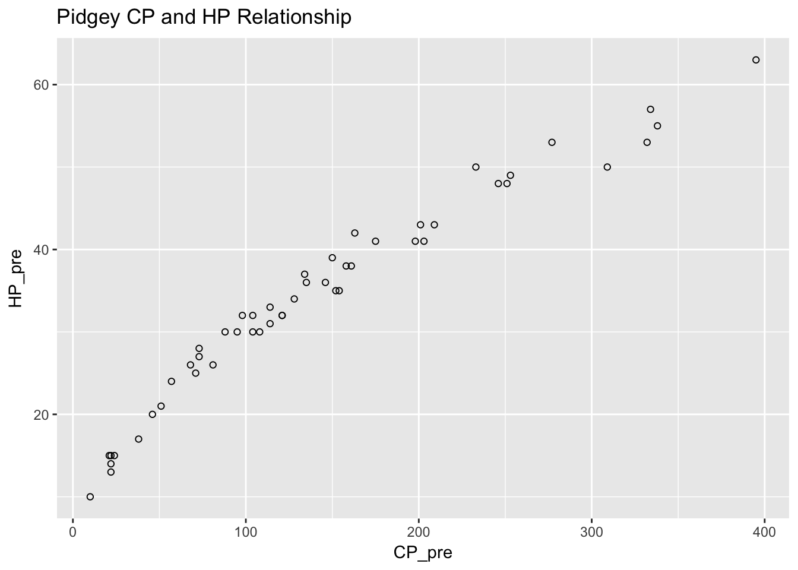
This did not look like a linear relationship at all. I tried to fit several models. First we tried the linear one as a baseline. This was actually pretty good, although the diagnostics don’t look great.
pidgey_CP_HP_model <- lm(HP_pre ~ CP_pre, data = pidgeys)
summary(pidgey_CP_HP_model)##
## Call:
## lm(formula = HP_pre ~ CP_pre, data = pidgeys)
##
## Residuals:
## Min 1Q Median 3Q Max
## -7.105 -1.619 0.620 1.872 5.252
##
## Coefficients:
## Estimate Std. Error t value Pr(>|t|)
## (Intercept) 15.821364 0.764216 20.70 <2e-16 ***
## CP_pre 0.128385 0.004448 28.86 <2e-16 ***
## ---
## Signif. codes: 0 '***' 0.001 '**' 0.01 '*' 0.05 '.' 0.1 ' ' 1
##
## Residual standard error: 2.965 on 48 degrees of freedom
## (5 observations deleted due to missingness)
## Multiple R-squared: 0.9455, Adjusted R-squared: 0.9444
## F-statistic: 832.9 on 1 and 48 DF, p-value: < 2.2e-16plot(pidgey_CP_HP_model)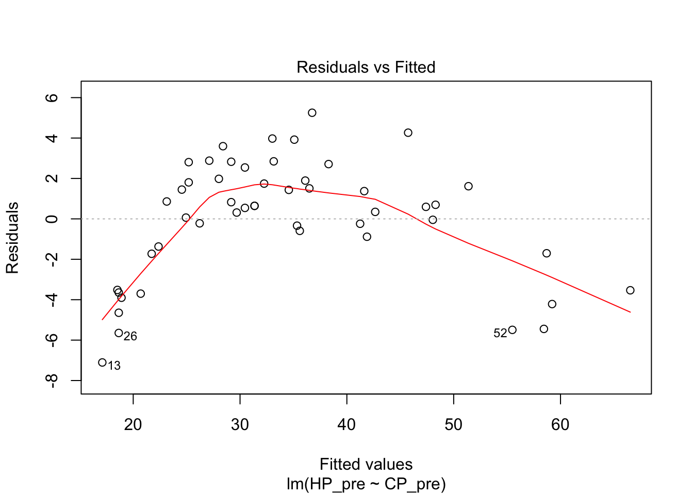 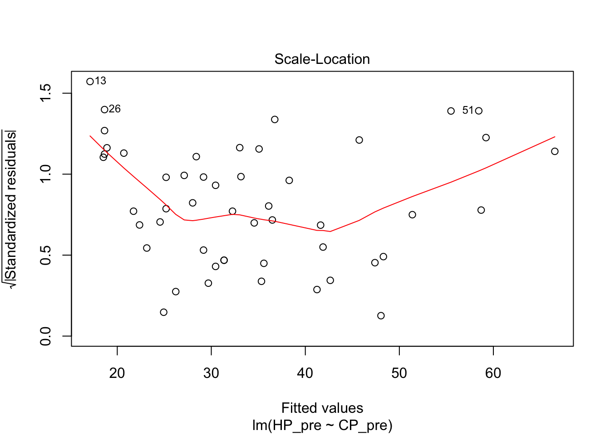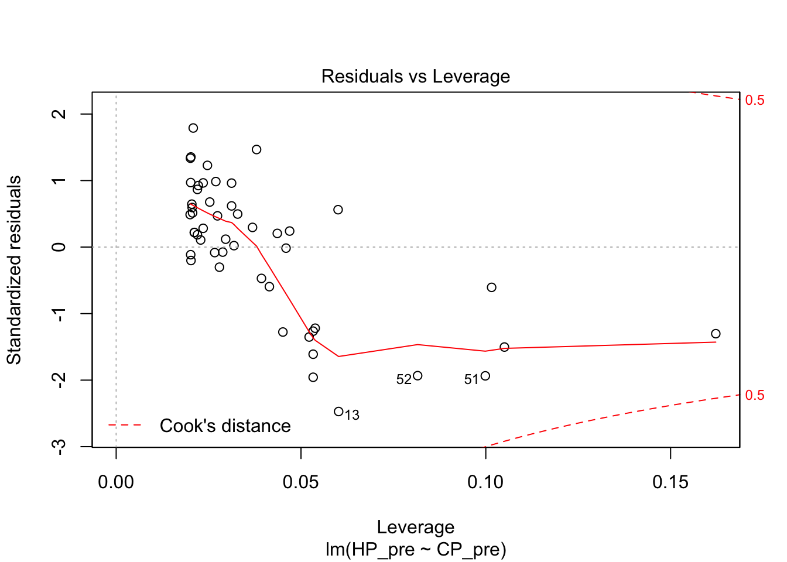
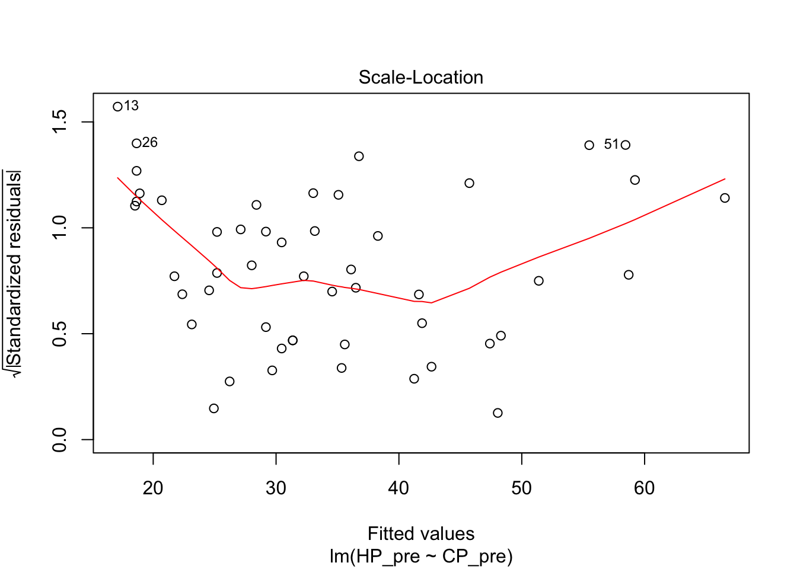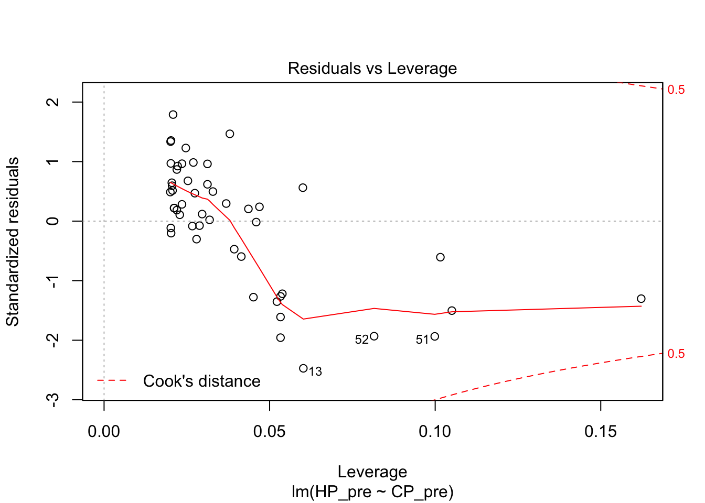
I next tried a logarithmic model. The diagnostics on this weren’t great either. The R squared was actually even worse than the linear model.
pidgey_logCP_HP_model <- lm(HP_pre ~ log(CP_pre), data = pidgeys)
summary(pidgey_logCP_HP_model)##
## Call:
## lm(formula = HP_pre ~ log(CP_pre), data = pidgeys)
##
## Residuals:
## Min 1Q Median 3Q Max
## -4.224 -2.286 -1.111 2.047 10.300
##
## Coefficients:
## Estimate Std. Error t value Pr(>|t|)
## (Intercept) -32.8371 2.8319 -11.60 1.6e-15 ***
## log(CP_pre) 14.3065 0.5944 24.07 < 2e-16 ***
## ---
## Signif. codes: 0 '***' 0.001 '**' 0.01 '*' 0.05 '.' 0.1 ' ' 1
##
## Residual standard error: 3.514 on 48 degrees of freedom
## (5 observations deleted due to missingness)
## Multiple R-squared: 0.9235, Adjusted R-squared: 0.9219
## F-statistic: 579.2 on 1 and 48 DF, p-value: < 2.2e-16plot(pidgey_logCP_HP_model) 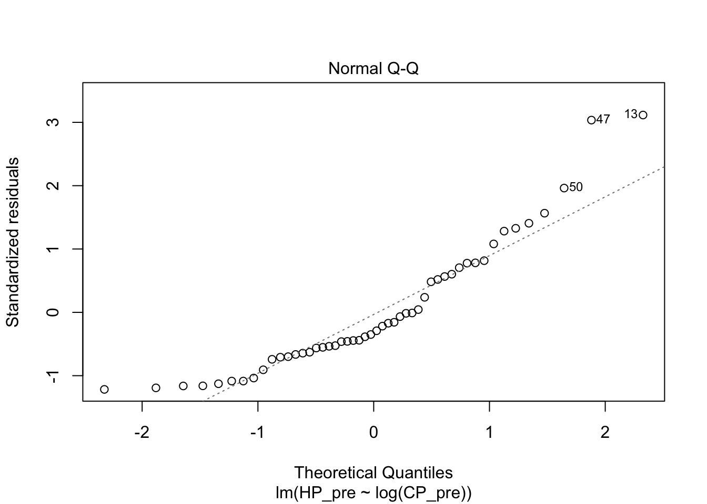
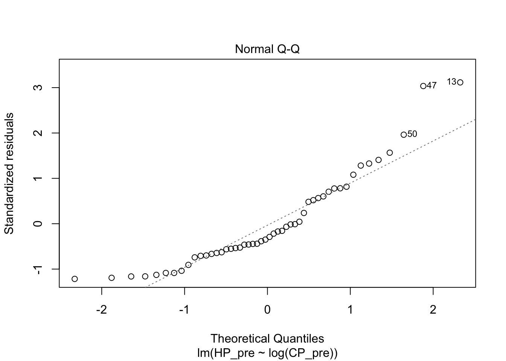

I then tried a square root model. The R squared was much better, and the diagnostics looked better.
pidgey_sqrtCP_HP_model <- lm(HP_pre ~ I(CP_pre^(0.5)), data = pidgeys)
summary(pidgey_sqrtCP_HP_model)##
## Call:
## lm(formula = HP_pre ~ I(CP_pre^(0.5)), data = pidgeys)
##
## Residuals:
## Min 1Q Median 3Q Max
## -3.424 -1.178 -0.116 1.035 3.611
##
## Coefficients:
## Estimate Std. Error t value Pr(>|t|)
## (Intercept) -0.01716 0.66486 -0.026 0.98
## I(CP_pre^(0.5)) 3.04014 0.05548 54.799 <2e-16 ***
## ---
## Signif. codes: 0 '***' 0.001 '**' 0.01 '*' 0.05 '.' 0.1 ' ' 1
##
## Residual standard error: 1.593 on 48 degrees of freedom
## (5 observations deleted due to missingness)
## Multiple R-squared: 0.9843, Adjusted R-squared: 0.9839
## F-statistic: 3003 on 1 and 48 DF, p-value: < 2.2e-16plot(pidgey_sqrtCP_HP_model) 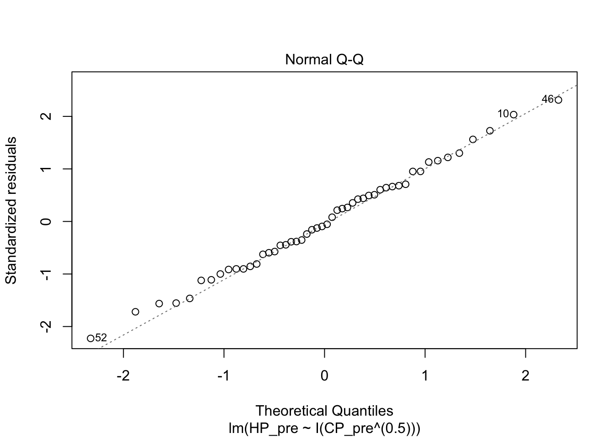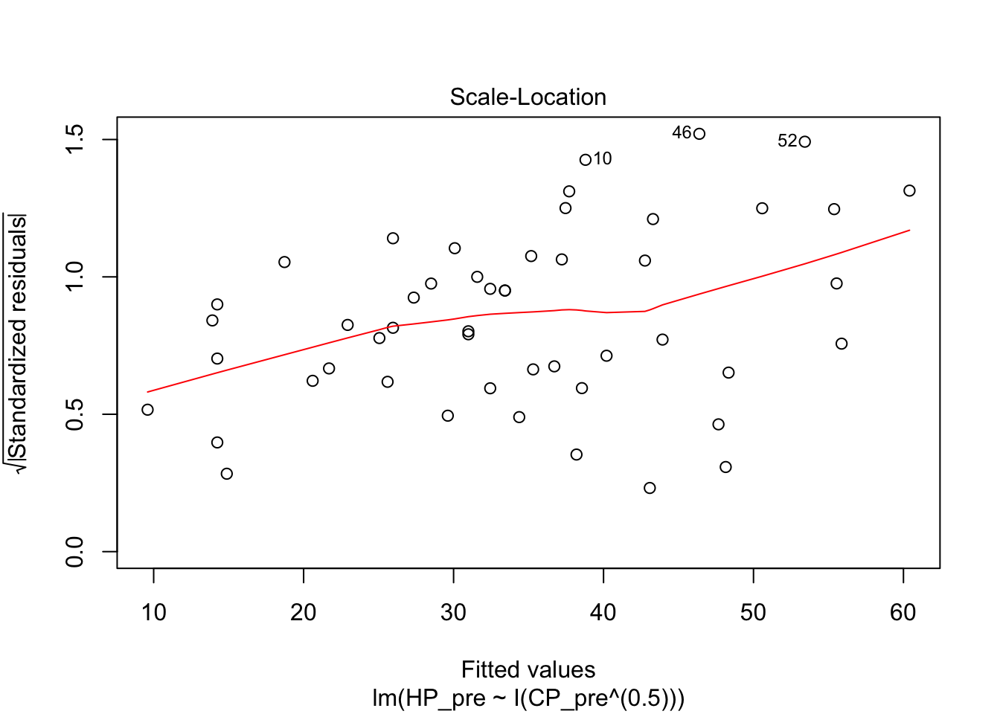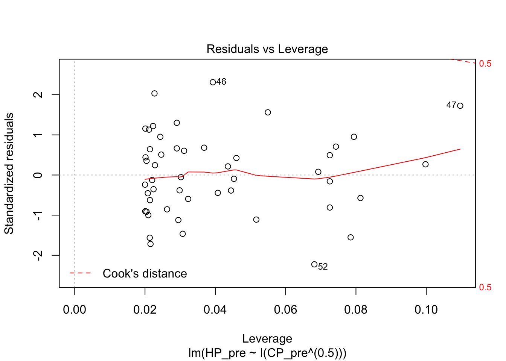
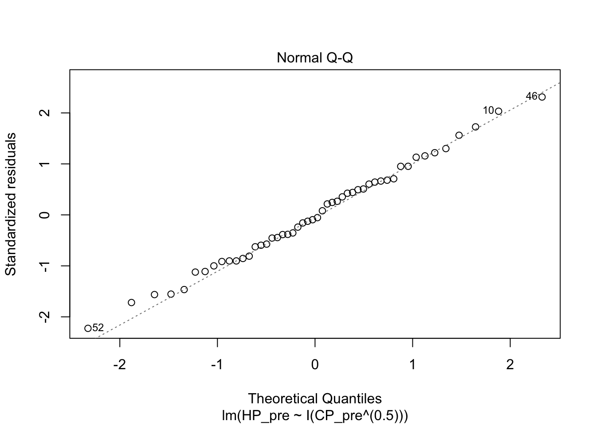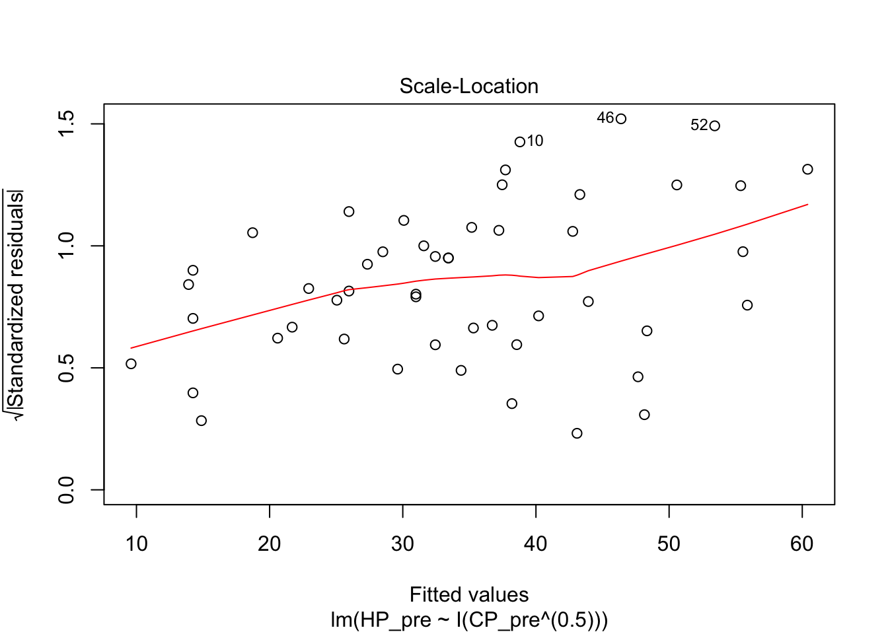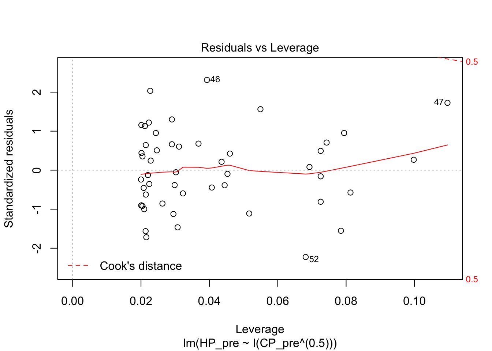
Here’s the model in equation form:
\[HP = 3.04 \times \sqrt{CP} - 0.017 + \epsilon\] Those numbers were so close to round numbers that we could say:
\[HP \approx 3 \times \sqrt{CP}\]
Discussion
There appears to be a linear relationship between pre and post evolution CP and pre and post evolution HP. The relationship between CP and HP appears to be exponential.
There are some other people who have done similar analyses on the relationship between pre and post evolution CP. There are even calculators that provide estimates of the post evolution CP. Here’s one example.
The original version of this paper had a negative intercept in the CP evolution model. This model’s intercept is not significantly different from 0. The implication of the original negative intercept was that one might have a Pigeotto that had lower CP than the original Pidgey. With the updated model, this is no longer possible.
I was not able to find other HP evolution analysis online. It appears that at least for Pidgeys, there is a simple linear relationship between pre and post evolution HP.
Here’s a data set that could be used for cross validation: https://www.openintro.org/stat/data/?data=pokemon